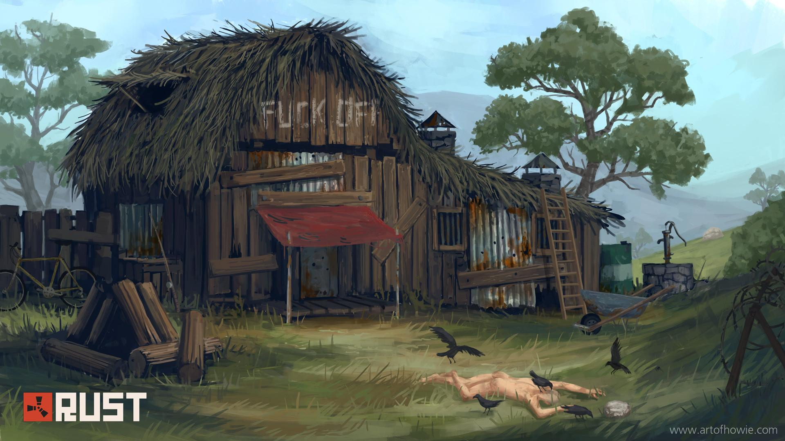

Rust is in its 9th year and has now had over 350 content updates, with a guaranteed content patch every month. From regular balance fixes and improvements to AI and graphics updates to adding content like new maps, musical instruments, trains and drones, as well as regular seasons and events, there’s always something interesting or dangerous (or both) happening on the island. Updates to the game include:
Procedurally generated worlds with map editor support
Host your own servers and with server-side modding support
Vehicles: horses, modular cars, hot air balloons, helicopters, trains and more
Complex electrical systems
Farming
New enemies, wildlife and factions
New monuments and areas to explore
Gestures and contact system
Musical instruments
Large train network
Huge recent graphics overhaul
..and more

SPECS:
MINIMUM:
Requires a 64-bit processor and operating system
OS: Windows 8.1 64bit
Processor: Intel Core i7-3770 / AMD FX-9590 or better
Memory: 10 GB RAM
Graphics: GTX 670 2GB / AMD R9 280 better
DirectX: Version 11
Network: Broadband Internet connection
Storage: 25 GB available space
Additional Notes: SSD is highly recommended or expect longer than average load times.